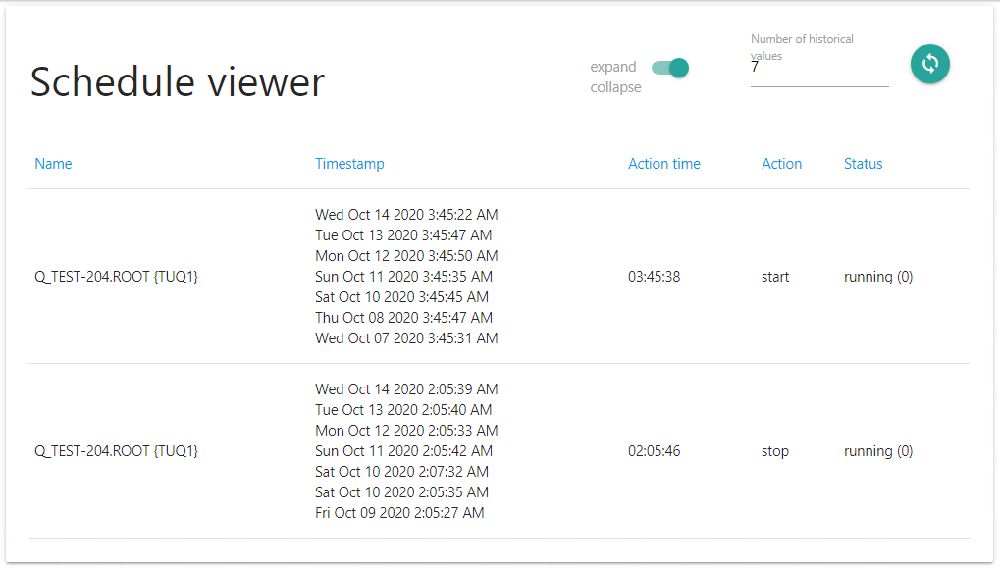

Просмотр расписания
С помощью действия можно посмотреть исторические данные о запуске, остановке и текущем статусе сервиса.
- Number of historical values позволяет настроить количество дней, за которые необходимо показывать исторические данные.
- Expand - Collapse позволяет переключать просмотр, группируя запуск и остановку сервиса в одну строку таблицы если они выполнены в близкое время, либо показывать каждый запуск и остановку в отдельной строке
- При нажатии на заголовок столбца происходит сортировка данных таблицы по соответствующему столбцу
Returned value: нет
Настройки действия
Действие можно настроить через Action editor. Настройки хранятся в файле config.json.
- startTimeCounterName - Имя счетчика, в котором хранится время запуска сервиса в секундах, с начала суток
- stopTimeCounterName - Имя счетчика, в котором хранится время остановки сервиса в секундах, с начала суток
- serviceStatus - Имя счетчика в котором хранится статус сервиса (запущен, остановлен, сервиса не существует и т.п.)
- serviceStates - соответствие цифровых статусов сервиса и их описаний
- historyDataNum - количество исторических данных необходимо показывать в таблице
- startTimeOutlier - интервал времени вокруг запуска в миллисекундах для группировки близких по времени значений
- stopTimeOutlier- интервал времени вокруг остановки в миллисекундах для группировки близких по времени значений
- serviceStates - объект, описывающий соответствие числовых и текстовых значений состояния сервиса для отображения тестовых значений состояния сервиса в таблице
- settings Пример файла настроек (нажмите для того, чтобы развернуть)
{ "name": "Schedule viewer", "description": "View service schedule", "homePage": "index", "ajaxServer": "ajax.js", "staticDir": "static", "showWhenNoObjectsSelected": false, "onChangeObjectMenuEvent": "callback:onChangeObjects", "showOnlyForObjectsWithProperties": "SERVICE_NAME", "startTimeCounterName": "I: Service start time", "stopTimeCounterName": "I: Service stop time", "serviceStatus": "I: Service state", "historyDataNum": 7, "startTimeOutlier": 240000, "stopTimeOutlier": 120000, "serviceStates": { "0": "running", "1": "paused", "2": "start pending", "3": "pause pending", "4": "continue pending", "5": "stop pending", "6": "stopped", "7": "unknown", "255": "no such service" } }